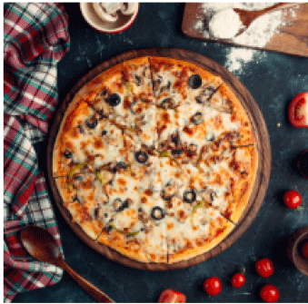
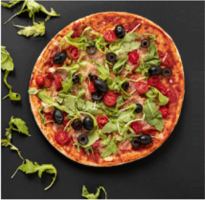

Opdracht 1.1 Wat is het verschil tussen het internet en het world wide web?
Internet is een wereldwijd systeem van onderling verbonden computernetwerken die het TCP / IP-protocol gebruiken om apparaten wereldwijd te koppelen. World Wide Web verwijst naar de online inhoud die is geformatteerd in HTML en toegankelijk via het HTTP-protocol.
Opdracht 1.2 Wat is het verschil tussen HTML, CSS en JavaScript?
HTML is een op tekst gebaseerde benadering om te beschrijven hoe de inhoud is gestructureerd op een webpagina. Volgens de tags in het HTML-bestand geeft de webbrowser de tekst, inhoud, tabellen, lijsten en andere elementen weer. CSS is een stijltaal die wordt gebruikt om het uiterlijk en de opmaak te beschrijven van een document dat is geschreven in opmaaktaal. JavaScript, is een client-side scriptingtaal. Het wordt gebruikt om de webpagina dynamisch te maken. HTML, CSS en JavaScript worden beschouwd als de drie belangrijkste basistalen voor webontwikkeling.
Opdracht 1.3 Wat is een HTML tag en een HTML element? Hoe open je een HTML tag en hoe sluit je een HTML tag. Maak hiervoor voorbeelden en leg uit?
Een HTML-pagina is opgebouwd met behulp van elementen die de code in blokken indelen. Een element wordt gevormd door één of twee tags. Een tag is een code om een element te openen of te sluiten. In HTML hebben alle tags dezelfde indeling, ze beginnen met een kleiner-dan teken "< en eindigen met een groter-dan teken ">". Over het algemeen zijn er twee soorten tags. Tags voor het openen html> en tags voor het sluiten /html>. Het enige verschil tussen de opening tag en een afsluitende tag is de slash "/".
Elementen geven structuur aan een HTML-document en vertelt de browser hoe je wilt dat je website wordt gepresenteerd. Over het algemeen bestaan elementen uit een begin-tag, wat inhoud, en een eind-tag. De kop van een document wordt bijvoorbeeld aangegeven met het element head>. Dit is het begin van een document, en het erbij behorende element /head> is het einde.
Opdracht 1.4 HTML gebruikt basis tags om structuur op te bouwen. De html>, head> en body>. Geef voor elke element aan waarvoor het dient.
De eerste regel doctype, oftewel Document Type Definition (DTD) is ervoor bedoeld om aan te geven door welke versie van HTML het document is opgebouwd. Vervolgens wordt de html> tag gebruikt deze laat de browser weten dat HTML-code wordt gebruikt totdat deze wordt beëindigd op het einde van de pagina. De head> tag bevat de header informatie over de pagina, die bijna altijd de titel van de pagina en de meta-tags zal bevatten. De echte inhoud van elk HTML-document zit in het middengedeelte, dat door de tags body> en /body> wordt ingesloten. Dit is waar je de opmaak en het structuur van het document beschrijft, waarbij je een groot aantal tags voor plaatjes, koppen, alinea's, opsommingen en andere onderdelen kunt gebruiken.
Opdracht 1.5 Op HTML elementen kun je attributen gebruiken. Wat zijn HTML attributen? Geef minimaal 5 attributen en maak voorbeelden waar je de attributen in toepast
Attributen zijn nadere specificaties van een element. Ze worden opgenomen in de activering van het element, voor het >-teken. Indien meerdere attributen aan het element worden toegevoegd, worden deze gescheiden door een spatie. In veel gevallen moet voor een attribuut een waarde worden opgegeven. Als voorbeeld wordt aan het eerder genoemde P element het ALIGN attribuut toegevoegd.
href - bevat de URL (webadres) voor link
id - een unieke id voor een element
name - een naam voor een element
src - de bron URL (webadres) van een afbeelding
style- bepaalt inline CSS style voor een element
title- geeft extra informatie over een element (weergegeven als een tool tip)
Opdracht 1.6 Waarom is een goede HTML Structuur belangrijk? Is deze code een goede structuur? Leg uit.
Een site- en url structuur zijn belangrijk omdat je hiermee een solide basis legt voor het toekomstig organische verkeer. En niet alleen het organische verkeer, maar ook verkeer dat afkomstig is vanuit andere online marketing kanalen zoals AdWords. Door de solide basis te bepalen heb je de grootste kans om optimaal te presteren. Doe je dit niet, dan betekent dat in veel gevallen dat je regelmatig aanpassingen moet doen aan je websites om beter te presteren.
Opdracht 1.7 Wat is het verschil tussen inline en block elementen?
Een block-level element begint altijd op een nieuwe regel en neemt de volle breedte van het browservenster in. Het strekt zich uit naar links en rechts uit zo ver als het kan. Een inline element start niet op een nieuwe regel en beslaat slechts zo veel breedte als het nodig heeft om wat erin staat weer te geven.
Opdracht 1.8 Wat betekent nesting? Codeer een voorbeeld met nesting erin.
Programmeertechniek: het invoegen van een loop of een subroutine in een loop of subroutine. Nesting kan heel wat programmaregels besparen.
Voorbeeld
This is a paragraph
This is another paragraph
Opdracht 1.9 Sinds de komst van HTML5 zijn er elementen die betekenissen hebben. Wat wordt er bedoeld met HTML semantics? Waarom is het gebruik van semantics belangrijk?
Semantische HTML is een manier om HTML code te gebruiken om de structuur van een pagina op te bouwen of te verbeteren. Met andere woorden, het is een manier om met gebruik van HTML opmaak - classen, divs, tags enzovoort - de daadwerkelijke worden en bronnen van een pagina aan te vullen
Opdracht 1.10 Wat voor content zou je in de volgende elementen gebruiken? Geef in je antwoord voor elk element een toelichting
● - defines the header of a page or a section
●
Opdracht 1.11 Onderzoek en leg uit waarom headers zowel belangrijk zijn voor zoekmachines als voor de gebruikers.
Voor het aanmaken van een text-header, in het Nederlands een subkop of kop, kan je gebruik maken van een Header tag. Je kunt verschillende grootte koppen creëren.
Opdracht 1.12 Onderzoek hoe je een text-header aanmaakt en reproduceer het volgende resultaat:
Heading 1
Heading 2
Heading 3
Heading 4
Heading 5
Heading 6
Opdracht 1.13 Onderzoek wat een paragraaf tag is en hoe hij gebruikt wordt. Geef hier een voorbeeld bij.
Dit is een voorbeeld van een paragraaf tag
Opdracht 1.14 Onderzoek en leg het verschil tussen het stoppen van alle tekst in één paragraaf tag, en het opsplitsen van de tekst in meerdere tags uit.
Is overzichtelijker tijdens het programeren.
Opdracht 1.15 Reproduceer het volgende resultaat door gebruik te maken van text-headers en de paragraaf tags.
Mijn eerste website
Mijn eerste sub-kop
Lorum ipsum weetum nietum watum aanum doenen bennum halloum stopum this crazy thing and continue working otherwise you'll be expelled
Dit is mijn tweede sub
Lorum ipsum dit lijkt er meer op
Ga zo door
Opdracht 2.1 sub a
Opdracht 2.1 sub b
Opdracht 2.2 Bij het inladen van een bestand is het noodzakelijk om de locatie van het
bestand aan te geven. Dit kan op 2 manieren:
Relative path als het bestand waarnaar je linkt op dezelfde website staat.
Absolute path als je verwijst naar een bestand op een andere website.
Tiger, (Panthera tigris), largest member of the cat family (Felidae), rivaled only by the lion (Panthera leo) in strength and ferocity. The tiger is endangered throughout its range, which stretches from the Russian Far East through parts of North Korea, China, India, and Southeast Asia to the Indonesian island of Sumatra. The Siberian, or Amur, tiger (P. tigris altaica) is the largest, measuring up to 4 metres (13 feet) in total length and weighing up to 300 kg (660 pounds). The Indian, or Bengal, tiger (P. tigris tigris) is the most numerous and accounts for about half of the total tiger population. Males are larger than females and may attain a shoulder height of about 1 metre and a length of about 2.2 metres, excluding a tail of about 1 metre; weight is 160–230 kg (350–500 pounds), and tigers from the south are smaller than those of the north.
Lions
Lion, (Panthera leo), large, powerfully built cat (family Felidae) that is second in size only to the tiger. The proverbial “king of beasts,” the lion has been one of the best-known wild animals since earliest times. Lions are most active at night and live in a variety of habitats but prefer grassland, savanna, dense scrub, and open woodland. Historically, they ranged across much of Europe, Asia, and Africa, but now they are found mainly in parts of Africa south of the Sahara. An isolated population of about 650 Asiatic lions constitute a slightly smaller race that lives under strict protection in India’s Gir National Park and Wildlife Sanctuary..
Monkeys
Monkey, in general, any of nearly 200 species of tailed primate, with the exception of lemurs, tarsiers, and lorises. The presence of a tail (even if only a tiny nub), along with their narrow-chested bodies and other features of the skeleton, distinguishes monkeys from apes. Most monkeys have a short, relatively flat face without great prominence of the muzzle, although baboons and mandrills are notable exceptions. The vast majority of species live in tropical forests, where they move on all four limbs. All but the durukuli of tropical Central and South America are active during the day, moving frequently in bands as they search for vegetation, birds’ eggs, smaller animals, and insects to eat.
Hippopotamus
AHippopotamus is Greek for “river horse,” and the animal has been known since ancient times. Hippopotamuses are often seen basking on the banks or sleeping in the waters of rivers, lakes, and swamps next to grasslands. Because of their great size and aquatic habits, they are safe from most predators but human beings, who have long valued their hide, meat, and ivory and at times have resented them for ruining crops. Once ranging over the entire continent and beyond, hippopotamuses (or “hippos”) now live in eastern, central, and parts of southern Africa.
Opdracht 3.1 Input text field
Opdracht 3.2 Input other input fields
Opdracht 3.2 Input radiobutton
Opdracht 3.2 Input checkbox
Opdracht 3.2 Input password
Opdracht 3.2 Input reset
Opdracht 3.2 Input Submit
Opdracht 3.2 Input Date
Opdracht 3.2 Input Search
Opdracht 3.2 Input Time
Opdracht3.2 Input Hidden
Opdracht 3.2 Input Email
Opdracht 3.3 Input Email met Submit
Als je random tekst invoert en verzend krijg je de volgende melding: Gebruik een @ in het email adres
Opdracht 3.4 Formulier groeperen
Opdracht 3.5 Maak een drop down list
Opdracht 3.6 Noem een situatie voor het gebruik dropdown list, radio buttons en checkboxes met uitleg?
Checkbox - Het belangrijkste om in gedachten te houden met een selectievakje is dat er maar één label is, maar de gebruiker kiest tussen twee verschillende statussen. Gebruik selectievakjes alleen als het duidelijk is waar de gebruiker tussen kiest: Wat er gebeurt als het selectievakje is aangevinkt, moet duidelijk zijn; wat er gebeurt als het vakje niet is aangevinkt, moet ook duidelijk zijn.
Radio button lists worden gebruikt wanneer de gebruiker een enkele optie uit een lijst met opties moet selecteren. Als u een optie heeft die kan worden in- of uitgeschakeld, maar waarvan de twee verschillende statussen moeilijk uit te leggen zijn met een enkele optie, moet u een lijst met keuzerondjes met twee opties gebruiken in plaats van een selectievakje.
Met een (dropdownlist) vervolgkeuzelijst kan de gebruiker een enkele optie selecteren uit een groot aantal items. Door de doorzoekbare lijst van Appway te gebruiken, kunt u gebruikers zelfs toestaan te typen wat ze zoeken in de vervolgkeuzelijst en een lijst met overeenkomende resultaten te krijgen.
Opdracht 3.7 Reserveringsformulier om een sport te reserveren
Opdracht 3.8 Reserverings formulier om een boek te reserveren
Opdracht 3.10 Definitie van tabel elementen.
* Table - Een tabel is in beginsel een rij waarbij verschillende soorten waardes in aparte kolommen staan.
* Thead - Definieert de rijen die de titelcellen van een tabel bevatten.
* Tbody - Definieert de feitelijke gegevens van een tabel (bevat de inhoud van de tabel).
* Tfoot - Definieert de rijen die de verschillende kolommen afsluiten.
* Th - Definieert een titelcel van een tabel.
* Tr - Definieert het begin en het einde van een rij.
* Td - Definieert een cel uit een rij van een tabel.
Opdracht 3.11 Maak een tabel met table> element
Voornaam
Achternaam
Leeftijd
Telefoonnr
John
Doe
41
+31 12345678
Steven
Smith
32
+31 12345678
Alexander
Smith
15
+31 12345678
Opdracht 3.12
MA
DI
WO
DO
VR
Afspraak met tandarts
Sporten
Huiswerk maken
Werken
Werken
Afspraak met tandarts
Werken bij vrienden
Opdracht 3.13 Colspan vs Rowspan
Voor Racket sport is rowspan 3 en voor Ball sport is rowspan 3
Met het COLSPAN attribuut kan aangegeven worden hoeveel opeenvolgende cellen in horizontale richting samengevoegd moeten worden tot één cel.
Met het ROWSPAN attribuut kan aangegeven worden hoeveel opeenvolgende cellen in verticale richting samengevoegd moeten worden tot één cel.
Opdracht 3.14 Maak zelf een tabel met colspan en rowspan
Users Info
1
John Carter
johncarter@mail.com
2
Peter Parker
peterparker@mail.com
3
John Rambo
johnrambo@mail.com
Opdracht 4.1 Teken voor de bovenste website v/d elementen
Opdracht 4.2 Progammeer de website die je net uitgetekend hebt in html.
Menu
Unique woodfire pizzas or be or be tempted by our pasta, antipasto, focaccias, salads and Bruschetta dishes. Relax in the friendly ambience as you enjoy the aromas of the wood ovens or sit al fresco and soak up the mildura sunshine.
Original
Tomato sauce, marzarrela & oregano
$18.00
Salami
Tomato sauce, mild salami
$15.00

chicken
Tomato sauce, chicken, pineapple +++
$25.00

Hawaiian
Tomato sauce, marzarrela, ham & pineapple
$16.00
Opdracht 4.3 Teken hiervoor de HTML structuur na en bouw dit vervolgens in HTML.